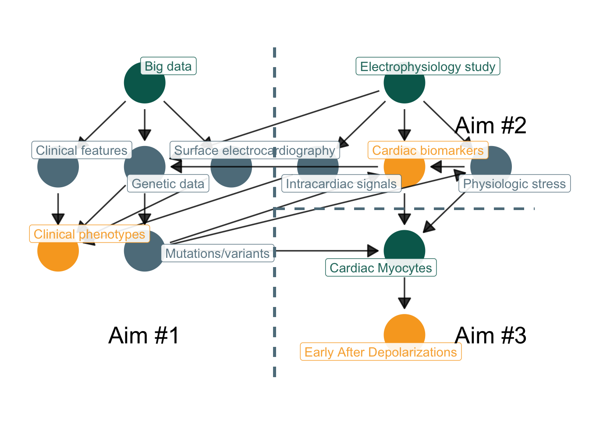

── Attaching core tidyverse packages ──────────────────────── tidyverse 2.0.0 ──
✔ dplyr 1.1.2 ✔ readr 2.1.4
✔ forcats 1.0.0 ✔ stringr 1.5.0
✔ ggplot2 3.4.2 ✔ tibble 3.2.1
✔ lubridate 1.9.2 ✔ tidyr 1.3.0
✔ purrr 1.0.1
── Conflicts ────────────────────────────────────────── tidyverse_conflicts() ──
✖ dplyr::filter() masks stats::filter()
✖ dplyr::lag() masks stats::lag()
ℹ Use the conflicted package (<http://conflicted.r-lib.org/>) to force all conflicts to become errors
Attaching package: 'scales'
The following object is masked from 'package:purrr':
discard
The following object is masked from 'package:readr':
col_factor
Attaching package: 'ggdag'
The following object is masked from 'package:stats':
filterResearch Aims
T32/F32 to K08/K23 Transition
- Planning
- Background
- Aims
- Why did he die on Tuesday and not on Monday?
- Douglas Zipes
Planning
Significance
- Knowledge gaps:
- biomarkers of response to neuromodulation therapy, including ablation
- understanding of regional variation in innervation affects arrhythmogenesis
- translation from single-cell studies to human models
- Research priorities:
- role of ANS signaling in emergence and maintenance of cardiac arrhythmias
- target modulation of ANS to attenuate electrical remodeling
- predict underlying biomarkers
- understand time course of ANS remodeling and neuropeptide expression
- sex/race differences in cardiac arrhythmogenesis
NIH and NHLBI released 2022 Research Report on ANS in CV disease, with a focus on AF and VT/VF. ANS = autonomic nervous system; CV = cardiovascular; AF = atrial fibrillation; VT/VF = ventricular tachycardia/fibrillation;


Research skills
| Category | Description |
|---|---|
| Clinical | cardiac electrophysiology, echocardiography, electrocardiography |
| Translational | genetic analysis, electrophysiology studies, molecular mechanisms |
| Epidemiology | causal inference, biostatistics, survival analysis with recurrence, study design |
| Computational | programming (R, MATLAB, python, C++, Julia), digital signal processing, machine learning |
Committee
| Mentor | Field | Specialty |
|---|---|---|
| Amit J. Shah MD/MS | CV/EPI | mental stress, autonomic dysfunction, digital biomarkers |
| Dawood Darbar MBCHB/MD | CV/EPI | atrial arrhythmias, genetics |
| Mark McCauley MD/PHD | CV/EP | atrial arrhythmias |
| Alvaro Alonso MD/PHD | EPI | atrial fibrillation, ARIC investigator |
| Rachel Lampert MD | CV/EP | mental stress, autonomic dysfunction |
Goal for next 1-2 years is to increase collaboration within committee in support of K23
dag <-
dagify(
stress ~ eps,
egm ~ eps,
labs ~ stress + eps,
pheno ~ ecg + dna + egm + clin,
clin ~ epi,
ecg ~ epi,
dna ~ epi + labs,
snp ~ dna,
labs ~ snp,
stress ~ snp,
dna ~ eps,
ead ~ ipsc,
ipsc ~ labs + stress + snp,
exposure = c("eps", "epi", "ipsc"),
outcome = c("labs", "pheno", "ead"),
labels = list(
eps = "Electrophysiology study",
labs = "Cardiac biomarkers",
ead = "Early After Depolarizations",
stress = "Physiologic stress",
ecg = "Surface electrocardiography",
egm = "Intracardiac signals",
epi = "Big data",
ipsc = "Cardiac Myocytes",
pheno = "Clinical phenotypes",
clin = "Clinical features",
snp = "Mutations/variants",
dna = "Genetic data"
)
) |>
tidy_dagitty(layout = "tree") |>
node_status()
ggplot(dag, aes(x = x, y = y, xend = xend, yend = yend, color = status)) +
geom_dag_point() +
geom_dag_edges(
arrow_directed = grid::arrow(length = grid::unit(10, "pt"), type = "closed"),
arrow_bidirected = grid::arrow(length = grid::unit(10, "pt"), type = "open", ends = "both"),
edge_alpha = 0.8
) +
geom_dag_label_repel(
aes(label = label),
force = 1,
nudge_y = 0.5,
alpha = 0.9
) +
scale_color_manual(values = c("exposure" = green[2], "outcome" = orange[2]), na.value = grey[5]) +
geom_segment(aes(x = 0, xend = 0.0, y = -0.5, yend = 3.5, color = grey[1]), linetype = "dashed", linewidth = 1) +
geom_segment(aes(x = 0, xend = 3, y = 1.5, yend = 1.5, color = grey[1]), linetype = "dashed", linewidth = 1) +
annotate("text", label = "Aim #1", x = -1.5, y = 0.0, size = 7) +
annotate("text", label = "Aim #2", x = 2.5, y = 2.5, size = 7) +
annotate("text", label = "Aim #3", x = 2.5, y = 0.0, size = 7) +
theme_dag(legend.position = "none") 
Methods
Electrophysiology Study
- Baseline and post-procedural atrial conduction properties
- Coronary sinus + circulating blood samples (including DNA)
- Surface + intracardiac mapping and electrophysiological signal
- Vagal nerve stimulation
Big Data
- Cohort generated from population-level data (UIC/CCTS, ARIC, MVP/VAMC)
- Computational model to classify AF based on clinical + cardiac imaging features
- Whole exome sequencing of DNA in pAF patients to identify autonomic variants
- Extraction of intracardiac features from EPS (volume, scar, voltage, etc…)
UIC = University of Illinois at Chicago; CCTS = Center for Translational Research; ARIC = Atherosclerotic Risk in Communities;
Outcomes
- Mechanisms explored could identify candidate subjects for NPY2R/Gal1R receptor blockade or VNS therapy
- Efficacy of VNS therapy could be quantified through serum testing
- Genetic variants that affect autonomic function along the neurocardiac axis may interplay with known inherited arrhythmis, such as the vagal-mediated triggers of SCD in LQTS patients
SCD = sudden cardiac death; LQTS = Long QT syndrome
Background
Autonomic control of the heart
- Neurocardiac axis is a hierarchical system of SNS and PNS afferent/efferent circuits that interact at multiple levels (Armour et al. 1997)
- Cortex ↔︎ brainstem
- Spinal cord ↔︎ extracardiac ganglia (e.g. stellate)
- Intrinsic cardiac nervous system (ICNS) ↔︎ heart
- Autonomic regulation is critical in the development of most CV disease
- Disregulated catecholamines in heart failure
- Post myocardial infarct VF
- Triggered arrhythmias such as VT
SNS = sympathetic nervous system; PNS = parasympathetic nervous system;

Neurovisceral integration
- Lower levels of networked structures (ICNS, hypothalamus) integrate afferent information about metabolic demands
- Higher levels of networked structures (amydala, cortex) integrate lower networks and generate conscious/uncscious CV state representations
- Allows for environmental/psychological factors to interplay with cardiac physiology, e.g. mental stress causing arrhythmia
Critical role of the vagus
- Embryologically, vagus nerve sprouts from medulla and extends to distant organs (thus long pre-ganglionic axons) e.g. heart, lung, intestines
- Parasympathetic control is evolutionarily more primitive in vertebrates, preceeding sympathetic control
- Sharks exhihibt phasic HRV without sympathetic innervation (Taylor, Wang, and Leite 2022)
- Mammalian vagal control is more complex, with multiple nuclei, e.g. polyvagal (Porges 2009)
- Mammalian vagal outflow is particularly coupled with cardiorespiratory control
- Leads to respiratory sinus arrhythmia
- Respiratory changes occur at a high-frequency, can be measured by HRV
Stephen Porges proposed the Polyvagal Theory during his tenure at UIC. HRV = heart rate variability;
Vagal therapeutic interventions
- Chronic VNS reduces drop in ejection fraction in different animal models of cardiomyopathy, including MI, but studies have mixed results in humans
- NECTAR-HF ~ VNS or sham, no difference at 6 months in LV size/function, n = 96
- INOVATE-HF ~ right VNS + GDMT vs. GDMT, no difference in mortality, n = 700
- ANTHEM-HF ~ non-randomized VNS, improved LV function, pilot study (required titrated VNS to cause decrease in HR)
- VNS may be anti-arrhythmic in animal models, with decreased VT/VF, but minimal human studies
- GANGLIA-AF, paroxysmal AF randomized to PVI or atrial GP ablation, decreased AAD dosages in GP group, n = 102
VNS = vagal nerve stimulation; MI = myocardial infarction; LV = left ventricle; GP = ganglionated plexi; AAD = anti-arrhythmic drugs
Sympathovagal crosstalk
- Arrhythmia thresholds affected by sympathetic and vagal activity
- Intracardiac cross-talk between adrenergic (sympathetic) and cholinergic (vagal) neurons in the hierarchy of neurocardiac axis is critical for arrhythmogenesis during mental stress
- Atria are heavily innervated by autonomic ganglionic plexi, leading to the complex activity that regulates cardiac conductive properties(Hoover et al. 2009; Armour et al. 1997)
- Sympathetic nervous activity is slower onset, but vagolysis is rapid, thus being a more likely causal component of arrhythmogenesis
Molecular mechanisms
- Sympathetic/adreneric neurons release catecholamines (NE) that directly affect the myocardium
- NPY and galanin is also released, which both inhibit cholinergic activity (Herring 2015; Herring et al. 2012)
- Both inhibit firing and leading to vagolytic effects on the myocardium(Kalla et al. 2020; Herring et al. 2008)
- Galanin released as a adrenergic co-transmitter, binding to GalR1 receptors
- NPY binds to cholinergic neurons through the Y2 receptor
- Both directly/indirectly involve protein kinase C
- NPY receptors exist along the neurocardiac axis, including adrenal medulla (Y3) and cardiac tissue (Y2)(Coote 2013)
NE = nor epinephrine; NPY = neuropeptide Y


Aim #1
Aim 1: Identify electrocardiographic phenotypes of paroxysmal AF with structurally normal atria. We will generate electrocardiographic parameters in sinus rhythm (atrial and ventricular activation and repolarization indices) and in atrial fibrillation (amplitude of fibrillatory waves, atrial frequency). We will assess the relationship of these parameters to groups of paroxysmal AF with normal left atrial volume. Hypothesis: Increased amplitude of fibrillatory waves during atrial fibrillation and increased variability in P wave indices will identify paroxysmal AF with structurally normal atria.
Premises
- Paroxysmal AF requires both a trigger and a substrate to progenerate
- Triggered mechanisms occurs primarily from pulmonary veins and occur due to:
- Enhanced automaticity
- Myocardial micro-reentry
- Triggered activity
- Electrical abnormalities preceed ± cause mechanical changes (fibrosis, myocardial disarray,
Modeling progression of AF
flowchart LR
t1[Enhanced automaticity]
t2[Micro-reentry]
t3[Delayed after-depolarization]
trig[Triggered ]
epaf[Early paroxysmal AF]
ppaf[Progressing paroxysmal AF]
lpaf[Late paroxysmal/persistent AF]
epaf --> ppaf --> lpaf
Aim #2
Aim 2: Determine the electrophysiological characteristics of sympathetically-mediated paroxysmal AF. In a prospective subgroup in the AF Registry with paroxysmal AF, we will measure biomarkers of chronic, increased sympathetic activation during electrophysiology studies, including cardiac-specific levels of NPY and Gal. Hypothesis: Elevated levels of NPY and Gal will be associated inversely with the level of scar..
Aim #3
Aim 3: Evaluate the role of genetic variants in cardiovagal receptors in sympathetically-mediated paroxysmal AF. We will identify if common genetic variants in the cardiovagal receptors, including GAL1R and NPY2R, are associated with abnormalities in ECG markers. Hypothesis: Genetic variants will be associated with increased risk of paroxysmal AF in structurally normal atria.
End
References
Armour, J. Andrew, David A. Murphy, Bing Xiang Yuan, Sara Macdonald, and David A. Hopkins. 1997. “Gross and Microscopic Anatomy of the Human Intrinsic Cardiac Nervous System.” Anatomical Record 247 (2): 289–98. https://doi.org/10.1002/(SICI)1097-0185(199702)247:2<289::AID-AR15>3.0.CO;2-L.
Coote, J H. 2013. “Myths and Realities of the Cardiac Vagus.” Journal of Physiology 591 (17): 4073–85. https://doi.org/10.1113/jphysiol.2013.257758.
Herring, Neil. 2015. “Autonomic Control of the Heart: Going Beyond the Classical Neurotransmitters.” Experimental Physiology 100: 354–58. https://doi.org/10.1113/expphysiol.2014.080184.
Herring, Neil, James Cranley, Michael N Lokale, Dan Li, Julia Shanks, Eric N Alston, Beatrice M Girard, et al. 2012. “The Cardiac Sympathetic Co-Transmitter Galanin Reduces Acetylcholine Release and Vagal Bradycardia: Implications for Neural Control of Cardiac Excitability.” Journal of Molecular and Cellular Cardiology 52 (3): 667–76. https://doi.org/10.1016/j.yjmcc.2011.11.016.
Herring, Neil, Michael N Lokale, Edward J Danson, Daniel A Heaton, and David J Paterson. 2008. “Neuropeptide Y Reduces Acetylcholine Release and Vagal Bradycardia via a Y2 Receptor-Mediated, Protein Kinase C-dependent Pathway.” Journal of Molecular and Cellular Cardiology 44 (3): 477–85. https://doi.org/10.1016/j.yjmcc.2007.10.001.
Hoang, Jonathan D., Siamak Salavatian, Naoko Yamaguchi, Mohammed Amer Swid, and Marmar Vaseghi. 2020. “Cardiac Sympathetic Activation Circumvents High-Dose Beta Blocker Therapy in Part Through Release of Neuropeptide Y.” JCI Insight 5 (11). https://doi.org/10.1172/JCI.INSIGHT.135519.
Hoover, D. B., E. R. Isaacs, F. Jacques, J. L. Hoard, P. Pagé, and J. A. Armour. 2009. “Localization of Multiple Neurotransmitters in Surgically Derived Specimens of Human Atrial Ganglia.” Neuroscience 164 (3): 1170–79. https://doi.org/10.1016/j.neuroscience.2009.09.001.
Kalla, Manish, Guoliang Hao, Nidi Tapoulal, Jakub Tomek, Kun Liu, Lavinia Woodward, Erica Dall’Armellina, et al. 2020. “The Cardiac Sympathetic Co-Transmitter Neuropeptide Y Is Pro-Arrhythmic Following ST-elevation Myocardial Infarction Despite Beta-Blockade.” European Heart Journal 41 (23): 2168–79. https://doi.org/10.1093/eurheartj/ehz852.
Porges, Stephen W. 2009. “The Polyvagal Theory: New Insights into Adaptive Reactions of the Autonomic Nervous System.” Cleveland Clinic Journal of Medicine 76: S86. https://doi.org/10.3949/ccjm.76.s2.17.
Shivkumar, Kalyanam, Olujimi A. Ajijola, Inder Anand, J. Andrew Armour, Peng Sheng Chen, Murray Esler, Gaetano M. De Ferrari, et al. 2016. “Clinical Neurocardiology Defining the Value of Neuroscience-Based Cardiovascular Therapeutics.” Journal of Physiology 594 (14): 3911–54. https://doi.org/10.1113/JP271870.
Taylor, Edwin W., Tobias Wang, and Cleo A. C. Leite. 2022. “An Overview of the Phylogeny of Cardiorespiratory Control in Vertebrates with Some Reflections on the ‘Polyvagal Theory’.” Biological Psychology 172 (July). https://doi.org/10.1016/j.biopsycho.2022.108382.